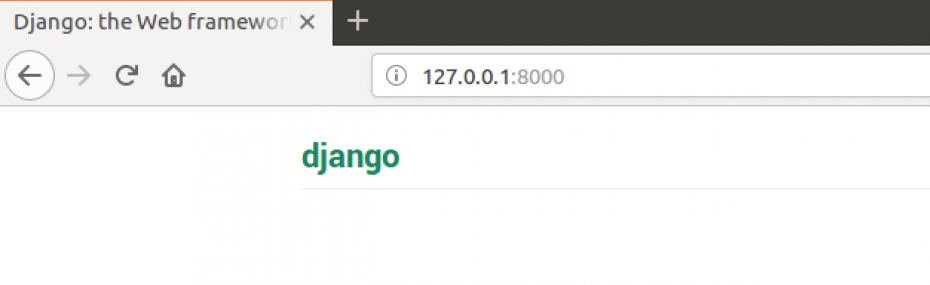

Django URLs
Django URLs
We're about to build our first webpage: a homepage for your blog! But first, let's learn a little bit about Django URLs.
What is a URL?
A URL is a web address. You can see a URL every time you visit a website – it is visible in your browser's address bar. (Yes!
127.0.0.1:8000
is a URL! And
https://djangogirls.org
is also a URL.)

Every page on the Internet needs its own URL. This way your application knows what it should show to a user who opens that URL. In Django, we use something called
URLconf
(URL configuration). URLconf is a set of patterns that Django will try to match the requested URL to find the correct view.
How do URLs work in Django?
Let's open up the
mysite/urls.py
file in your code editor of choice and see what it looks like:
mysite/urls.py
"""mysite URL Configuration
[...]
"""
from django.contrib import admin
from django.urls import path
urlpatterns = [
path('admin/', admin.site.urls),
]
As you can see, Django has already put something here for us.
Lines between triple quotes (
'''
or
"""
) are called docstrings – you can write them at the top of a file, class or method to describe what it does. They won't be run by Python.
The admin URL, which you visited in the previous chapter, is already here:
mysite/urls.py
path('admin/', admin.site.urls),
This line means that for every URL that starts with
admin/
, Django will find a corresponding
view
. In this case, we're including a lot of admin URLs so it isn't all packed into this small file – it's more readable and cleaner.
Your first Django URL!
Time to create our first URL! We want ' http://127.0.0.1:8000/ ' to be the home page of our blog and to display a list of posts.
We also want to keep the
mysite/urls.py
file clean, so we will import URLs from our
blog
application to the main
mysite/urls.py
file.
Go ahead, add a line that will import
blog.urls
. You will also need to change the
from django.urls…
line because we are using the
include
function here, so you will need to add that import to the line.
Your
mysite/urls.py
file should now look like this:
mysite/urls.py
from django.contrib import admin
from django.urls import path, include
urlpatterns = [
path('admin/', admin.site.urls),
path('', include('blog.urls')),
]
Django will now redirect everything that comes into '
http://127.0.0.1:8000/
' to
blog.urls
and looks for further instructions there.
blog.urls
Create a new empty file named
urls.py
in the
blog
directory, and open it in the code editor. All right! Add these first two lines:
blog/urls.py
from django.urls import path
from . import views
Here we're importing Django's function
path
and all of our
views
from the
blog
application. (We don't have any yet, but we will get to that in a minute!)
After that, we can add our first URL pattern:
blog/urls.py
urlpatterns = [
path('', views.post_list, name='post_list'),
]
As you can see, we're now assigning a
view
called
post_list
to the root URL. This URL pattern will match an empty string and the Django URL resolver will ignore the domain name (i.e.,
http://127.0.0.1:8000/
) that prefixes the full URL path. This pattern will tell Django that
views.post_list
is the right place to go if someone enters your website at the '
http://127.0.0.1:8000/
' address.
The last part,
name='post_list'
, is the name of the URL that will be used to identify the view. This can be the same as the name of the view but it can also be something completely different. We will be using the named URLs later in the project, so it is important to name each URL in the app. We should also try to keep the names of URLs unique and easy to remember.
If you try to visit
http://127.0.0.1:8000/
now, then you'll find some sort of 'web page not available' message. This is because the server (remember typing
runserver
?) is no longer running. Take a look at your server console window to find out why.
command-line
return _bootstrap._gcd_import(name[level:], package, level)
File "<frozen importlib._bootstrap>", line 1030, in _gcd_import
File "<frozen importlib._bootstrap>", line 1007, in _find_and_load
File "<frozen importlib._bootstrap>", line 986, in _find_and_load_unlocked
File "<frozen importlib._bootstrap>", line 680, in _load_unlocked
File "<frozen importlib._bootstrap_external>", line 850, in exec_module
File "<frozen importlib._bootstrap>", line 228, in _call_with_frames_removed
File "/Users/ola/djangogirls/blog/urls.py", line 5, in <module>
path('', views.post_list, name='post_list'),
AttributeError: module 'blog.views' has no attribute 'post_list'
Your console is showing an error, but don't worry – it's actually pretty useful: It's telling you that there is
no attribute 'post_list'
. That's the name of the
view
that Django is trying to find and use, but we haven't created it yet. At this stage, your
/admin/
will also not work. No worries – we will get there.
If you see a different error message, try restarting your web server. To do that, in the console window that is running the web server, stop it by pressing Ctrl+C (the Control and C keys together). On Windows, you might have to press Ctrl+Break. Then you need to restart the web server by running a
python manage.py runserver
command.
If you want to know more about Django URLconfs, look at the official documentation: https://docs.djangoproject.com/en/5.1/topics/http/urls/